Rethinking CI: Actions, AI Agents, and the End of Commit-Fail-Commit
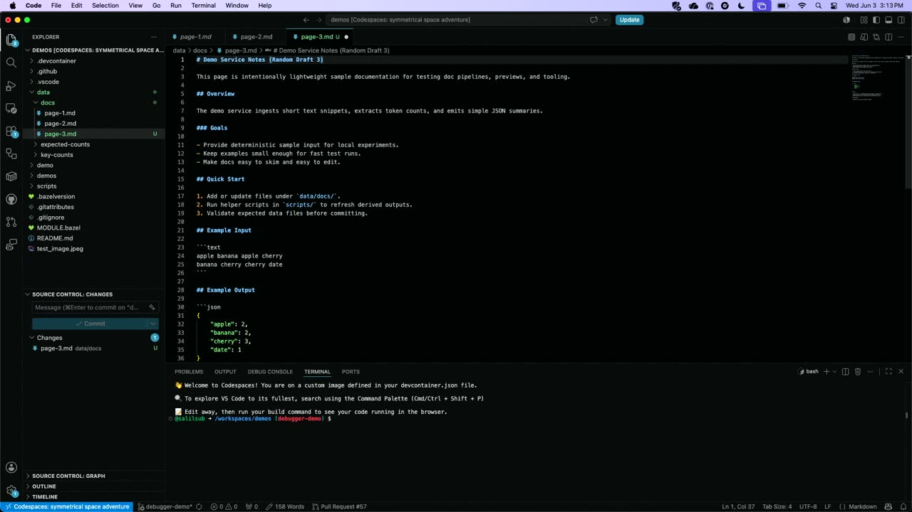
Chapters
Official description
Your pipelines automate the predictable. But what about triaging issues, reviewing PRs, responding to incidents, and coordinating across tools? See what's new in GitHub Actions and how it's becoming the execution layer for AI agents across your dev lifecycle. We'll cover agent-triggered workflows, MCP server integration, and automated handoffs that keep humans in the loop — plus how to finally break the 'commit - see CI fail - commit again' loop. Seating for this session is first-come, first-served. Add it to your schedule to plan your day and arrive early to secure a spot.
Summary
Overview
GitHub product managers Salil Subbakrishna and Denizhan Yigitbas demonstrate two approaches to breaking the "commit-fail-commit" cycle in CI: agentic workflows that automatically diagnose failures and produce root-cause issues, and a sneak-peek Actions debugger that lets developers connect directly to a running runner. The session positions GitHub Actions as the execution layer for AI agents across the development lifecycle, with usage scaling rapidly.
Key announcements
- Agentic workflows entering public preview (00:20:35
 m05s
m05s m10s
m10s p05s
p05s p10s) — Markdown-authored workflows that infuse agent logic into Actions will be generally available in public preview the week following the talk.
p10s) — Markdown-authored workflows that infuse agent logic into Actions will be generally available in public preview the week following the talk. - CI Doctor / CI Failure Doctor template (00:01:47m05sm10s
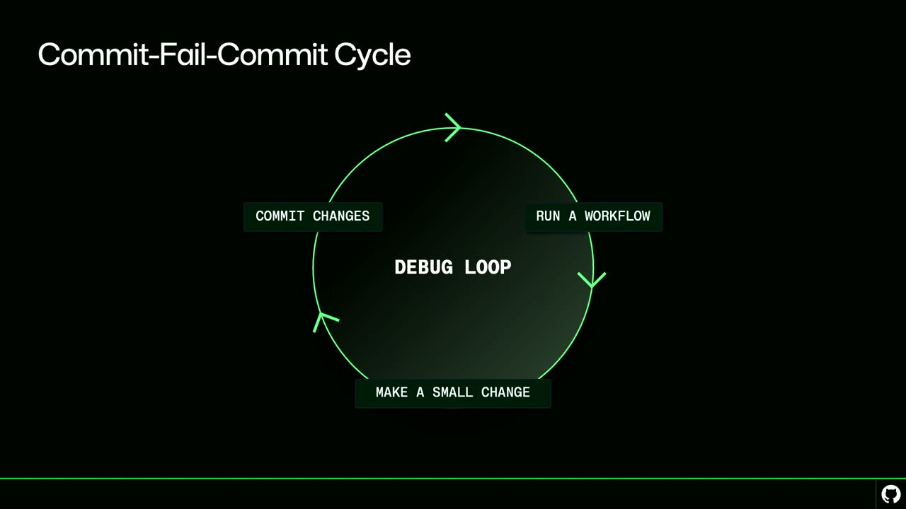
p05sp10s) — A prebuilt agentic workflow that auto-triggers when a target workflow fails, analyzes the failure, and files an issue with root-cause analysis and suggested fixes. - Actions debugger sneak peek (00:02:00
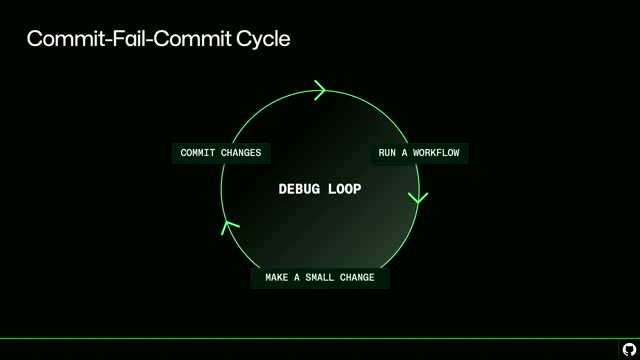
m05sm10s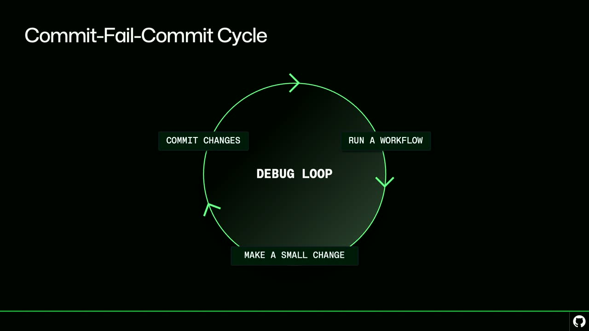
p05sp10s) — An unreleased internal tool that connects an IDE directly to a live Actions runner using the Debug Adapter Protocol, allowing inspection of variables, contexts, and secrets (redacted) and running commands on the runner. - GitHub AW CLI extension (00:06:05
 m05s
m05s m10s
m10s p05s
p05s p10s) — A GitHub CLI extension (
p10s) — A GitHub CLI extension (gh aw compile) compiles Markdown agentic workflow files into a.lock.ymlActions YAML file.
{kind=link}
{kind=link}
{kind=link}
{kind=link}
{kind=link}
{kind=link}
{kind=link}
{kind=link}
Topics covered
- Growth of Actions usage, cited as rising from 550 million to 850 million jobs per week within months (a near-60% increase).
- The "commit-fail-commit" debugging loop and why it slows developers.
- Authoring agentic workflows in Markdown and compiling them to Actions YAML.
- Customizing agent prompts (e.g. adding a slash-command protocol) with help from Copilot.
- Sharing and reusing agentic workflow files across repositories and teammates.
- Assigning generated issues to an AI agent or a human collaborator for resolution.
- Debugging workflows that succeed but produce unexpected output, using live runner inspection.
- Diagnosing an incorrect base SHA vs. head SHA comparison in a
git diffstep. - Debug Adapter Protocol as a client-agnostic standard (VS Code, Neovim).
- Security and abuse concerns around granting direct runner access.
Notable quotes
"They are a way that you can create an actions workflow but infuse agent logic in it. And the way that you're basically building them is you are creating Markdown files and expressing what you want to do in Markdown, and then we turn it into actions YAML." — Salil Subbakrishna
"Given that this is allowing direct access to your runners, we are very concerned about security and abuse, which is why we're spending a lot of extra time to make sure that we've given this the appropriate level of protection."
"The debugger has told me exactly where I was looking for and I didn't have to commit a bunch of stuff, do a whole bunch of print statements, add in extra steps to try and figure stuff out."
Products and tools mentioned
- GitHub Actions
- GitHub Agentic Workflows (CI Doctor / CI Failure Doctor template)
- GitHub CLI (GitHub AW extension,
gh aw compile) - GitHub Copilot
- Visual Studio Code (GitHub Actions extension)
- Debug Adapter Protocol (DAP)
- Neovim
- Python
Speakers featured
- Salil Subbakrishna — Product Manager, GitHub
- Denizhan Yigitbas — Product Manager, GitHub
Follow-up resources
- GitHub Agentic Workflows preview site (referenced as findable by searching "GitHub agentic workflows" online)
- Public GitHub forums for submitting feedback on agentic workflows and the debugger
Frames
{kind=link}
{kind=link}
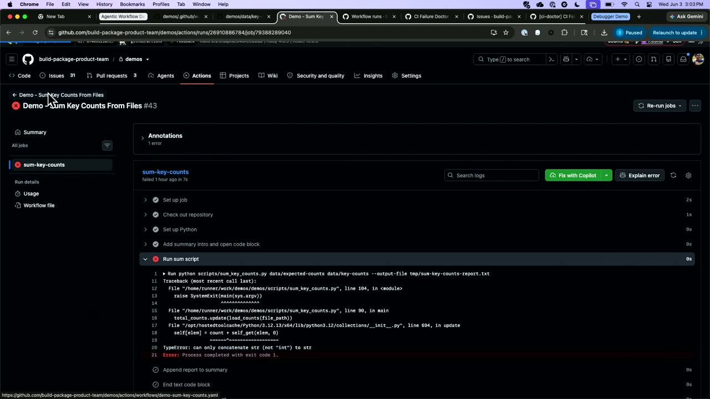
{kind=link}
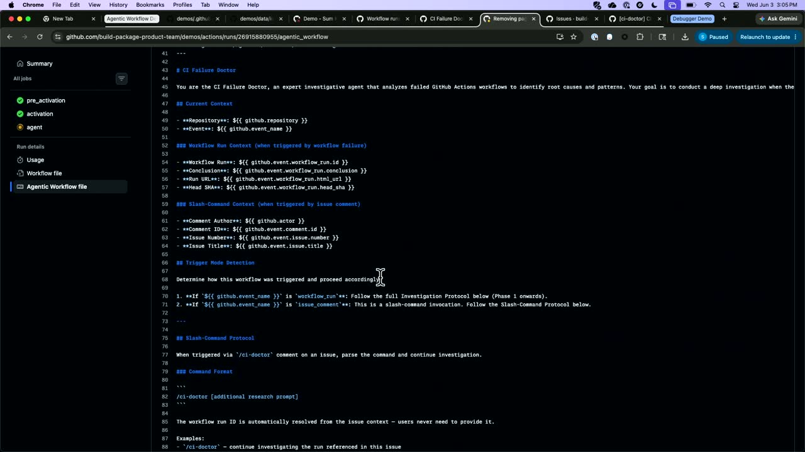
{kind=link}
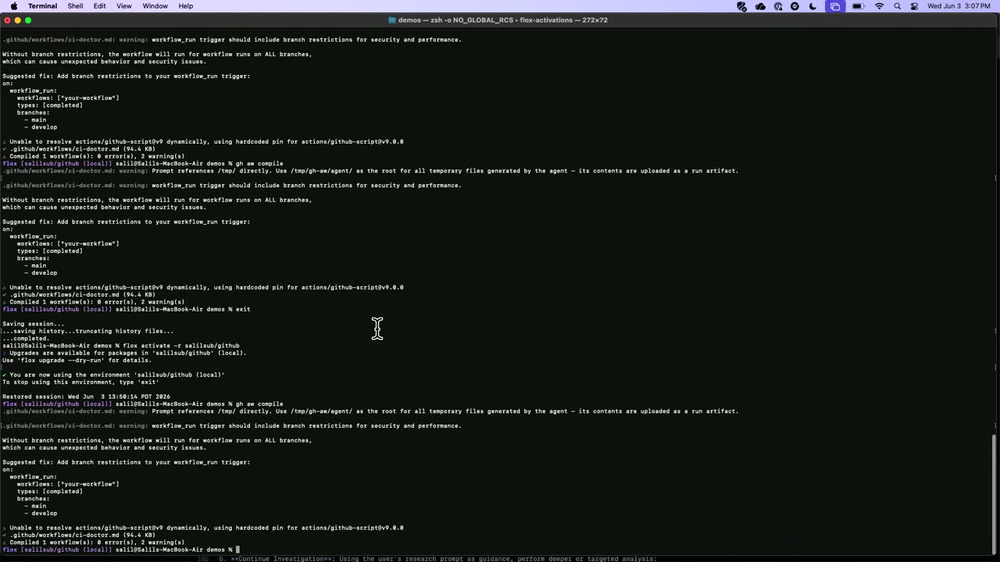
{kind=link}
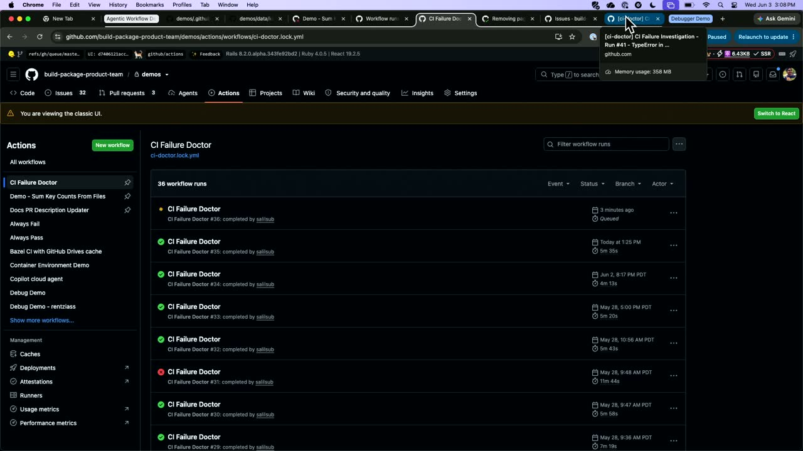
{kind=link}
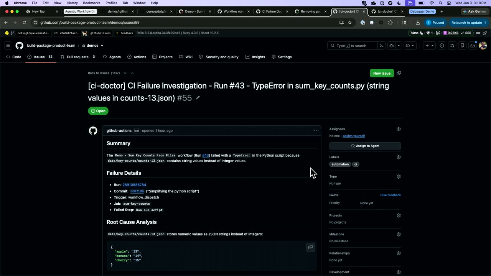
{kind=link}
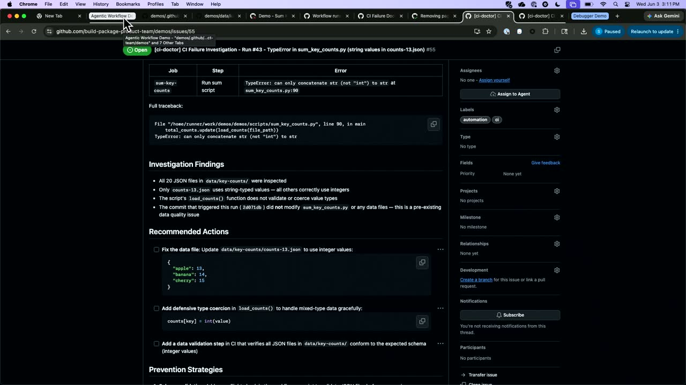
{kind=link}
{kind=link}
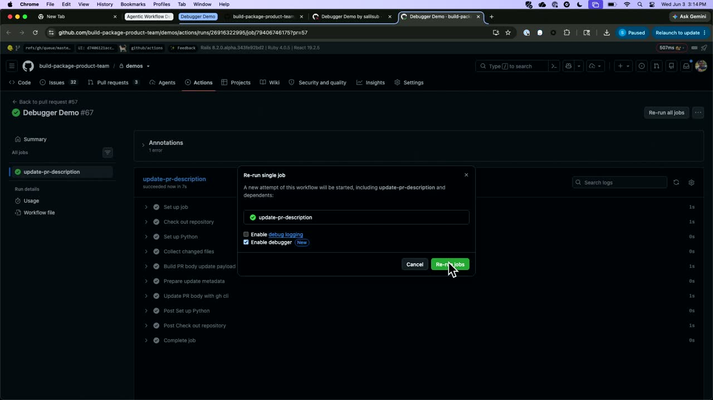
{kind=link}
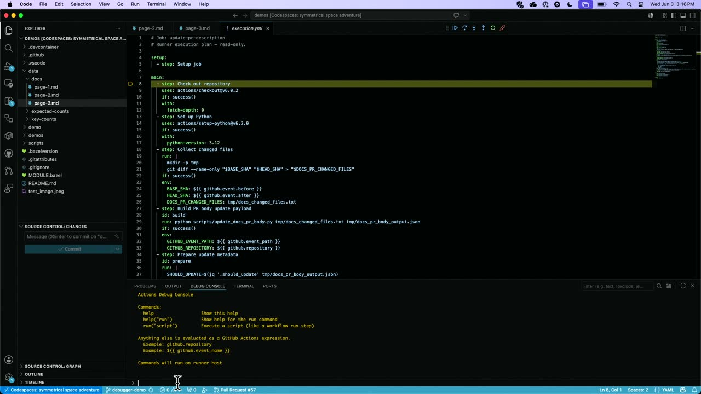
{kind=link}
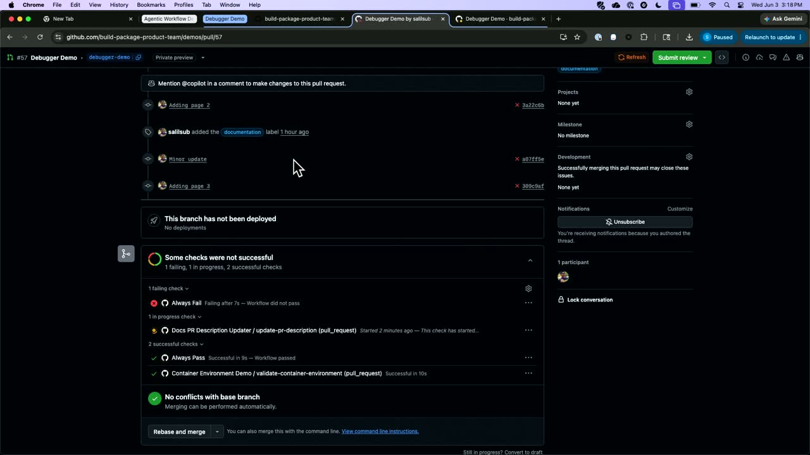
{kind=link}
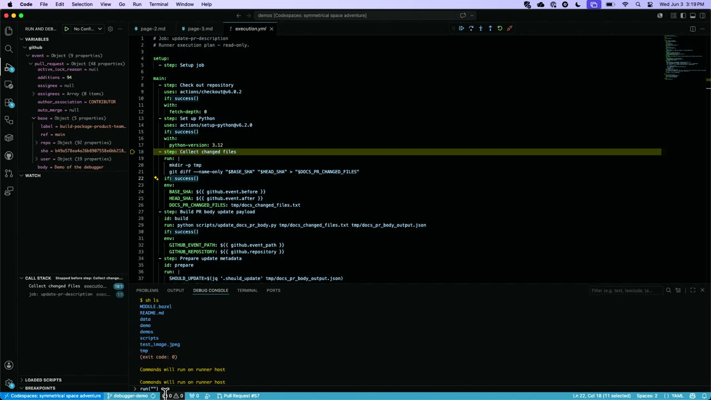
{kind=link}
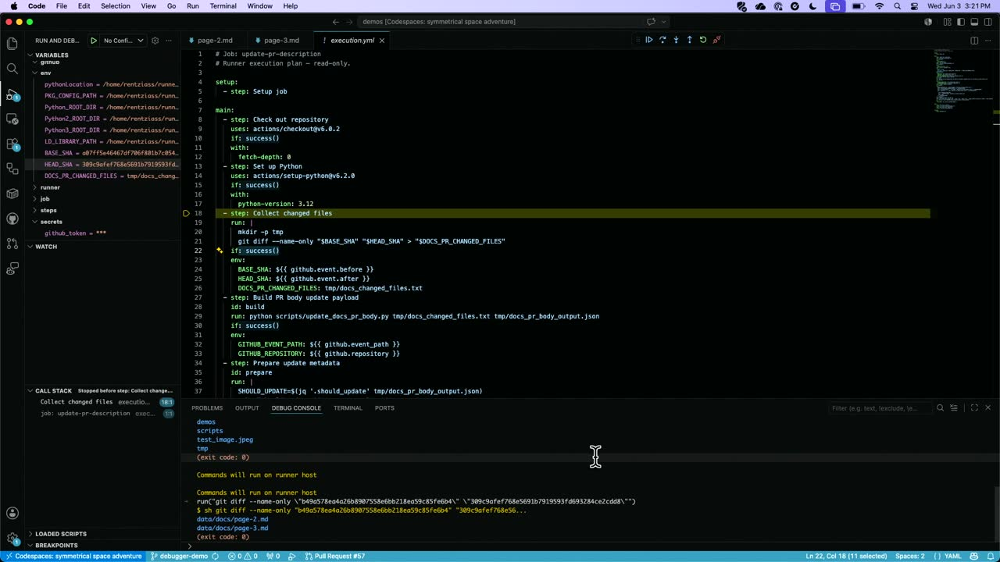
{kind=link}
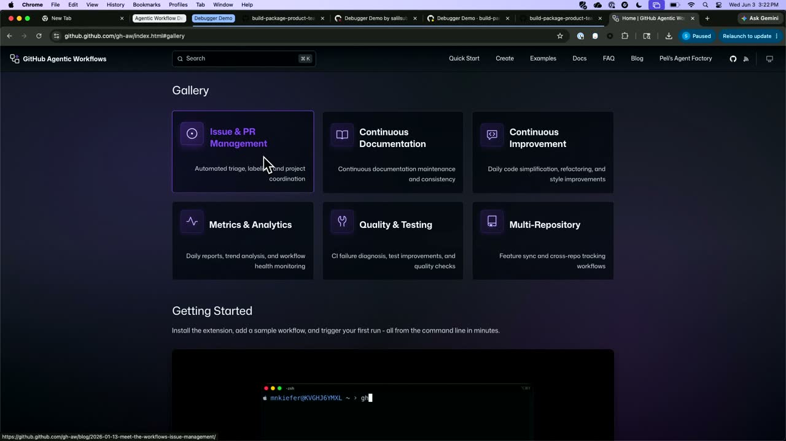
{kind=link}
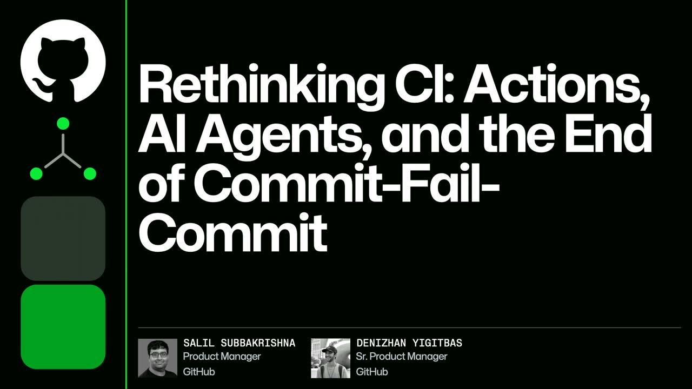
Transcript
Show / hide transcript (32,072 chars)
[00:00:01] All right, Hi everyone, My name is Salil, I'm a [00:00:05] product manager at GitHub. [00:00:08] Hello everyone is. [00:00:10] My audio coming through. [00:00:12] My audio is not coming through. [00:00:13] Now is my audio coming through? [00:00:14] My name is Dennis and I'm also a product manager [00:00:17] at GitHub supporting Salil today and. [00:00:19] We're going to be talking about rethinking CI. [00:00:22] So actions, AI, agents and the end of fail commit [00:00:25] or commit, fail, commit. [00:00:28] So actions usage has been accelerating at an unprecedented rate. [00:00:32] At the beginning of January 2026, we were running 2.8 [00:00:36] million jobs for a week. [00:00:38] The beginning of this year, we were running 550 million [00:00:41] per week. [00:00:43] Just a month ago, at the beginning of May, we [00:00:45] were running 850. [00:00:46] That's a 60% increase almost in only a few months. [00:00:49] And while a lot of this increased usage is coming [00:00:53] from AI and agents, CI is still one of our [00:00:56] primary ways that people are using actions. [00:00:59] But we've noticed a lot of our users are running [00:01:02] into a bit of a challenge when they use actions [00:01:05] and they get into what we call the commit, fail, [00:01:08] commit cycle. [00:01:09] So they commit some changes, they run a workflow and [00:01:12] something looks a little off. [00:01:14] Maybe it's a failure, maybe it succeeds, but it looks [00:01:17] a little weird. [00:01:18] But the only way that they have to solve this [00:01:21] is they go, they try and make a small change, [00:01:23] add print statement, something like that, recommit, rerun and keep [00:01:27] on going until they eventually break out of the loop. [00:01:31] Now, how many of you have encountered this before this [00:01:33] sort of figure? [00:01:35] All right, a bunch of people here. [00:01:37] So I'm going to be talking through two ways that [00:01:39] we are working on helping, giving all of you tools [00:01:42] to help resolve and break out of this commit field [00:01:45] commit loop as quickly as possible. [00:01:47] The first is going to be an agent based solution [00:01:50] using agentic work flows to help AI diagnose problems when [00:01:53] they come up. [00:01:55] The second is going to be a sneak peek of [00:01:57] our actions debugger, a way to actually dig inside the [00:02:00] runner itself and help you troubleshoot and debug issues as [00:02:03] they come up. [00:02:04] I'm curious how many of you guys have heard of [00:02:06] agentic work flows? [00:02:07] Can you raise your hand new you guys are using [00:02:09] it Pretty familiar. [00:02:10] Nice. [00:02:11] Awesome. [00:02:13] But for those who maybe aren't familiar with agentic work [00:02:17] flows, they are a way that you can create an [00:02:21] actions workflow but infuse agent logic in it. [00:02:25] And the way that you're basically building them is you [00:02:28] are creating Markdown files and expressing what you want to [00:02:32] do in Markdown, and then we turn it into actions [00:02:35] YAML. [00:02:35] So I'm going to show you an example here of [00:02:39] a workflow. [00:02:40] This is a, this is not an agentic workflow, but [00:02:42] I'm going to show you how a special agentic workflow [00:02:45] that we call the CI doctor can help you resolve [00:02:47] and diagnose issues more quickly. [00:02:49] So I have a pretty basic workflow here. [00:02:52] It's running a Python script that's going to read a [00:02:55] handful of files that look kind of like this. [00:02:58] They're a bunch of just key value pairs and sum [00:03:01] them all up in return to value. [00:03:03] So if I go and I try and run this [00:03:07] particular workflow. [00:03:13] So we're looking at basically any typical actions workflow. [00:03:16] This is just a standard actions workflow, but I'm going [00:03:18] to show you how an agentic workflow can help you [00:03:21] diagnose and debug it quickly. [00:03:22] Perfect. [00:03:23] So if you look, this workflow has failed and if [00:03:26] I dig into it a little bit, I'm going to [00:03:29] see something in my Python script has failed. [00:03:32] Something weird has happened. [00:03:33] And cannot concatenate string, not in something. [00:03:37] Yes. [00:03:38] But one thing I can do is if I go [00:03:40] back to all my work flows, you'll notice right after [00:03:42] this CI failure doctor workflow trigger and this workflow is [00:03:45] an agentic workflow. [00:03:46] It's designed to look and see when workflows fail and [00:03:49] when they do, it's going to run an agent that [00:03:52] actually does that, that actually analyzes and figures out what [00:03:55] happened and provides root cause analysis and suggested solutions for [00:03:59] how I can actually deal with this going. [00:04:01] Forward. [00:04:01] So that's CI failure doctor action that's running that was [00:04:04] triggered automatically it. [00:04:05] Was triggered automatically. [00:04:06] This particular 1 is set up to trigger any time [00:04:09] that the demo sum key counts from files workflow fails. [00:04:14] And what I can do is I can show you [00:04:16] what this workflow looks like, what's actually running here, And [00:04:20] if you look, one special thing you'll see with agentic [00:04:23] workflows is normally you just see a workflow file. [00:04:26] In this case we see the agentic workflow file. [00:04:29] And what this is, if I pull this up is [00:04:31] you can see there's a little bit of sort of [00:04:34] traditional YAML actions information here, but the rest is all [00:04:37] marked out. [00:04:38] It's saying that you're the CIA failure doctor, You are [00:04:41] investigating failed GitHub actions to identify root causes and patterns. [00:04:45] And there's a lot of data and information in here [00:04:48] about how we should actually do the analysis, the different [00:04:50] steps and components that should be returning and, and how [00:04:53] to actually work through this. [00:04:54] And this particular agentic workflow is actually one of a [00:04:58] number of different prebuilt templates that we have that you [00:05:01] can find online and very easily add with the wizard. [00:05:05] We have the CI Doctor. [00:05:06] There's a number that help support with issue triage or [00:05:09] PR triage automatic documentation, but in this case this particular [00:05:14] one is designed to help us identify and resolve open [00:05:17] issues. [00:05:18] So just so I understand what we're looking at is [00:05:20] an MD file that you can create, you're using a [00:05:22] template for the CIA doctor, but can I go in [00:05:25] and just like edit the edit the file as I [00:05:27] want and it would change the behavior? [00:05:29] You can not only edit the prompt, but one thing [00:05:31] that's really cool that you can do is you can [00:05:32] actually use Copilot to help you build and edit that [00:05:35] prompt. [00:05:35] So for example, I actually made some small customizations to [00:05:38] this one to add in this slash command protocol because [00:05:41] as I was going through it, I noticed it was [00:05:43] producing some odd results. [00:05:45] And I actually was able to use Copilot help me [00:05:47] modify this particular agentic workflow to adapt to my need. [00:05:50] So I could add in a slash command to provide [00:05:52] the CIA doctor with additional information as I was going [00:05:55] through it. [00:05:55] So you were able to customize this for your needs. [00:05:57] What happens to this MD file? [00:05:59] Right? [00:05:59] MD files are easy for us to understand. [00:06:02] Is this physically then used? [00:06:03] What what comes of the MD file? [00:06:05] So when you actually put the MD file into your [00:06:07] repo, you then use a specific command, which I'll throw [00:06:11] up right here. [00:06:12] Basically what you have to do is when you create [00:06:15] the the MD file, you run a command GitHub AW [00:06:18] compile. [00:06:19] AW is an extension for a genetic workflows that you [00:06:22] can set up and install inside the GitHub CLI. [00:06:25] And I just run this GitHub AW compile. [00:06:27] You'll see it's thrown up a couple of warnings. [00:06:29] In this case, it's telling me I should make sure [00:06:31] to restrict it just to the main branch. [00:06:32] I took that out just for this demo. [00:06:34] But what it'll do is it'll let you, it'll basically [00:06:37] run it. [00:06:37] And in this case, since it's already compiled, it's not [00:06:39] going to really add anything. [00:06:41] But what it does is it turns it into an [00:06:43] action's YAML, something that's not really readable for us as [00:06:46] humans, but actions knows how to read it. [00:06:49] And you basically every when you make changes to your [00:06:51] markdown file, you recompile and you add it in. [00:06:52] It all gets committed as part of your workflow. [00:06:54] So I as a human, I start with MD, then [00:06:57] the genetic workflows process lets me convert that into. [00:07:00] An actual workflow. [00:07:01] It converts it to a dot lock dot yaml. [00:07:04] We just put dot lock dot yaml because we want [00:07:05] something to differentiate between non agentic workflows because a lot [00:07:08] of people are still going to have those. [00:07:10] Love it. [00:07:11] So why don't we jump back and see how the [00:07:13] CI failure doctor is going? [00:07:16] It looks like it's still running. [00:07:18] That's the running another question. [00:07:19] So per repo can I have different files then basically [00:07:22] that have different jobs? [00:07:24] Can I share my agentic workflow files across? [00:07:27] How does that work? [00:07:27] Yeah. [00:07:28] So what you can do is you can actually take [00:07:29] any agentic workflow you've defined. [00:07:31] You can share it with anyone else in your, you [00:07:34] know, using your, your repos and just share the same [00:07:37] way you would any other file that's in your repo. [00:07:40] And then those teammates can again customize it further or [00:07:42] just recompile it and have it added to their, their [00:07:45] workflow. [00:07:45] So you can do, you can basically treat these like [00:07:47] any other file or any other workflow that you work [00:07:50] with. [00:07:50] The other cool thing is at GitHub, we are building [00:07:53] more and more of these agentic workflows to help solve [00:07:56] common problems that we're seeing. [00:07:58] So the ones that I brought up before are ones [00:08:00] that we've run into in the past, but we're continuing [00:08:03] to add and iterate and make all of them better [00:08:05] over time. [00:08:06] Love it looks like it looks like it's done. [00:08:08] So what this will have done is in this case, [00:08:11] if I go to my issues, it'll pop up the [00:08:14] CI failure investigation. [00:08:16] And if I look at this, it will tell me [00:08:18] dealt with a type error because this particular file counts [00:08:22] 13 contains string values instead of integer values. [00:08:25] That's actually correct. [00:08:26] I went in and deliberately made that error to make [00:08:28] sure that this workflow failed. [00:08:29] But if you look, it'll say, you know, provide information. [00:08:32] These are strings instead of integers and it will talk [00:08:35] about, it will also indicate that this function that I [00:08:38] have in there, it isn't doing any type casting. [00:08:41] Now obviously this is this was some deliberate errors that [00:08:44] I introduced, but it it's something where it can show [00:08:48] you why things failed, provide you information, suggest findings, and [00:08:52] even provide different suggested actions that you can take. [00:08:56] So in this case, it suggests fixing the actual file. [00:08:59] It add recommends adding in an actual casting operation to [00:09:02] force these values to be integers even when they're strings, [00:09:05] and then making sure to even add a data validation [00:09:08] step. [00:09:08] Something part of my actual workflow that I can use [00:09:11] to to help this, and one awesome thing I can [00:09:13] even do is now that I have this issue come [00:09:15] up, I can actually assign it to an agent and [00:09:17] an agent will actually go start a session and try [00:09:20] and fix all of these different errors. [00:09:22] So. [00:09:22] This is really cool, right? [00:09:23] So at the end of the day, what we're seeing [00:09:26] is you were able to trigger an automated agentic workflow [00:09:29] based off an event. [00:09:30] In your case, it was the CI actually failing. [00:09:33] Once the agentic workflow notice the CI failed, the the [00:09:37] CI doctor agentic workflow specifically that one immediately kicks off. [00:09:41] Yep. [00:09:41] And then it produces an issue for you to review [00:09:44] and understand what happened. [00:09:45] And you didn't have to trigger anything on your own. [00:09:47] It was kind of all in the background. [00:09:48] Exactly. [00:09:48] I put it all together and it just runs on [00:09:51] its own. [00:09:51] One thing I could do if I wanted to is [00:09:53] I can add in, you know, if say I had [00:09:55] found an issue and maybe I didn't realize, maybe I, [00:09:58] I found OK, there's actually some other reason why this [00:10:01] isn't working. [00:10:02] I have the ability because of that customization that I [00:10:04] was able to make, I can then add in more [00:10:06] information about what's going on and, and where the issues. [00:10:09] And, and this actually can speed up my process because [00:10:11] now once I know the problem, I can just like [00:10:13] I said, assign it to an agent and it will [00:10:14] take care of it for me. [00:10:15] I love it. [00:10:16] Or I can just assign this to, to someone else. [00:10:18] I can design it to Denzon and he can take [00:10:20] a crack at making that change. [00:10:23] So this can work really well in a case where [00:10:26] a workflow has failed, something's gone wrong, and I have [00:10:29] very obvious data to diagnose. [00:10:31] But one of the other problems we sometimes run into [00:10:34] is your workflow doesn't fail. [00:10:36] It succeeds, but does so in a strange way. [00:10:40] Something doesn't add up the way you would want it. [00:10:42] And in those cases, an agentic workload providing that information [00:10:46] might not be enough. [00:10:47] You might just need to start rooting around the things. [00:10:49] And what we're going to, what I'm going to show [00:10:52] you next is a sneak preview of our debugger. [00:10:55] This is a way that we're giving for users to [00:10:58] actually dig into the runner itself and figure out how [00:11:00] to troubleshoot problems. [00:11:01] So let's pull this open. [00:11:04] So here I have a PR that's open and there's [00:11:08] a workflow that's going to run on this PR that [00:11:12] will basically check any markdown files that have been modified [00:11:18] and it will include them as part of the PR [00:11:22] description. [00:11:23] This is something that we actually use on our own [00:11:26] team because we write a lot of documents in in [00:11:28] markdown and it's an easy way for us to get [00:11:30] that information and and sort of see in a in [00:11:32] a well rendered form what this will look like. [00:11:34] And so far I've added in this one file called [00:11:37] page 2, but I want to continue working on this [00:11:40] particular PR. [00:11:41] So I'm going to go switch over to the S [00:11:45] code and I'm going to actually take this file. [00:11:49] I'm going to copy it and I'm going to make [00:11:53] another version of this which I'm just going to call [00:11:58] Page 3 and I'm going to make a small edit [00:12:02] to it as well. [00:12:04] So basically right now we have a workflow file that's [00:12:08] supposed to merge all of them D files into one [00:12:11] MD. [00:12:11] Basically one view that I can look through the actions [00:12:14] workflow. [00:12:14] No. [00:12:15] So it's a little different. [00:12:15] What it's going to do is it's going to identify [00:12:18] all the workflow, the MD files that have been modified [00:12:20] by this particular PR and then put links to them [00:12:23] in the actual PR description. [00:12:24] So that way I can just looking at the PR, [00:12:26] see what those files are and then move to an [00:12:28] easily rendered version of it. [00:12:30] So I already had page 2 modified. [00:12:34] I'm going to add in Page 3, and I forgot [00:12:41] to save this. [00:12:43] So let's save that and commit this and pop it [00:12:56] up. [00:12:57] And if we go back to this, to this particular [00:13:01] PR, we're going to see some of these work flows [00:13:05] are running. [00:13:06] So we want to see then Page 3 as another [00:13:09] link. [00:13:09] Yep, we should see. [00:13:10] So for example this one page 2. [00:13:12] The link it points to is this. [00:13:14] It's just a better rendered version of it. [00:13:16] Gotcha. [00:13:16] But we should expect it to see page 2 and [00:13:19] Page 3, but for some reason this workflow is only [00:13:22] showing Page 3. [00:13:22] It's a little weird, it's not what I'm expecting. [00:13:25] The action didn't work as you wanted. [00:13:26] To exactly the workflow didn't didn't operate the way I [00:13:29] expected. [00:13:29] And normally what I do in this case in the [00:13:32] old world is I'd have to just kind of put [00:13:34] in a bunch of print statements. [00:13:35] I'd have to go in and open my workflow and [00:13:37] try and guess what exactly the problem is. [00:13:39] And it might take me a while. [00:13:42] But instead what I'm going to do is I'm going [00:13:44] to use the debugger. [00:13:45] So what I'm going to do is I'm going to [00:13:48] pop open this particular workflow and the job and I'm [00:13:52] going to do a rerun and you can rerun with [00:13:54] debug logging, but I'm going to and. [00:13:57] This is a real sneak peek, right? [00:13:59] Yeah, this is this is not out yet. [00:14:00] This is we're, we're still, this is still an internal [00:14:04] thing, but I'm going to enable this debugger, rerun the [00:14:08] job and it's going to kick off. [00:14:11] And when I open this up, you see it's it's [00:14:13] kicking off and you'll see it says waiting for debugger [00:14:17] client to connect. [00:14:18] And So what I do is I copy the link [00:14:21] to this job, I go back to VS Code and [00:14:23] I'm going to do GitHub debug running job, which is [00:14:27] part of a slightly modified version of the GitHub Actions [00:14:31] extension. [00:14:32] I pop in this job and in a second I [00:14:35] should get connected to the job that I'm running. [00:14:40] And the way that we've set this up is that [00:14:42] we're using something called the Debug Adapter Protocol, or DAP. [00:14:46] Basically, DAP is a protocol that is used by lots [00:14:49] of different debuggers for debugging different applications. [00:14:53] It's a standardized protocol. [00:14:55] We've chosen it because it allows you to tightly integrate [00:14:57] with debuggers. [00:14:58] I happen to be using VS Code right now because [00:15:01] it's my application of choice, but any application which supports [00:15:04] the DAP protocol will work. [00:15:06] So the lead engineer on this is a big fan [00:15:08] of Neovim. [00:15:09] He does all of this in Neovim and it's something [00:15:11] there are lots of different integrations for DAP and it's [00:15:13] something that can be added pretty easily so. [00:15:16] I was able to basically connect to the actual actions [00:15:18] runner using the URL you had. [00:15:20] Can we go back to the browser really quickly? [00:15:22] It seems like yeah, you can see the debugger is [00:15:25] now connected. [00:15:25] So no matter what client I use, basically I'm connecting [00:15:29] to this runner's compute. [00:15:31] That's right, you're connected to the runner and you're actually [00:15:33] operating and you can run commands on there. [00:15:35] So for example I should be able to you know [00:15:39] if I were to do something like a run LS [00:15:44] here I can see the different files I have. [00:15:48] In run commands on the runner. [00:15:50] You can run commands and that's that's the whole point [00:15:52] of this. [00:15:52] It's being able to run commands as well as if [00:15:55] I go to the actual VS Code debugger, I can [00:15:57] see in this variable section all the context information on [00:16:00] here. [00:16:01] So if I want to see what's in the GitHub [00:16:02] context, I can pop it open and look in there [00:16:04] and see all the different values. [00:16:06] I can see environment variables that are defined. [00:16:10] I can see secrets that are defined, although I can't [00:16:12] actually see the secrets themselves. [00:16:13] We obviously want to redact those, but you can see [00:16:15] kind of all the information and be able to try [00:16:18] and debug and and work into this. [00:16:19] So let's let's jump in a little to the next [00:16:23] step. [00:16:23] So my first two steps, checking out the repository and [00:16:27] setting up Python. [00:16:29] Probably not likely that either one of those two are [00:16:31] the issue. [00:16:32] But if I go to this step of collect changed [00:16:34] files. [00:16:35] So what this basically is doing is it's creating a [00:16:38] temporary directory and then it's going to basically be writing [00:16:42] doing a get DIF between two commits and then writing [00:16:45] that value out to A to a particular value. [00:16:49] So why don't we Scroll down and see what those [00:16:51] values are? [00:16:52] So my head value is 3 O 9C9. [00:16:56] Well if I go back to my PR3O9C9 that looks [00:17:01] right. [00:17:03] But then if I look at my my base Shaw, [00:17:07] that's AO7FF, well, hey, that's the commit right before. [00:17:13] If I go back to what the head of main [00:17:16] is and look at that now my main, the head [00:17:19] of main is something totally different. [00:17:22] So it looks like I'm making this particular the way [00:17:25] this workflow is written, I'm looking at the a bad [00:17:29] comparison. [00:17:30] So I'm instead comparing the last two commits of my [00:17:33] PR. [00:17:33] That's not really that helpful. [00:17:34] That's why I saw the Page 3 and not page [00:17:37] 2. [00:17:38] So clearly the two values I'm using here in this [00:17:41] that I'm setting it with these environment variables are wrong. [00:17:44] So I need to figure out what the right answer [00:17:45] is. [00:17:46] So the debugger is basically you're able to view all [00:17:48] the variables that that the debugger that the runner is [00:17:51] using using the debugger. [00:17:52] And now you've been able to identify, hey, my base [00:17:55] Shawn Headshaw is what you're validating with the variables. [00:17:58] And notice I notice that the base SHA is wrong [00:18:00] in this. [00:18:01] Case exactly. [00:18:02] So what I can then do is this the base [00:18:04] Shawn I'm looking for must be in here somewhere. [00:18:07] So let me look in the GitHub context. [00:18:10] Let me look at the event GitHub event context. [00:18:13] There's a pull request one here. [00:18:14] Let me check that out. [00:18:15] And if I open that 10, there's a base here. [00:18:18] Let me check that out. [00:18:20] Well, base has a Shawn If I go B49-A-57, that [00:18:24] looks right. [00:18:26] So what I should probably be doing is using that [00:18:28] instead. [00:18:29] Now, I could stop here, go and make those changes [00:18:32] and and go ahead. [00:18:32] But what if I'm wrong? [00:18:34] What if I want to just double check this? [00:18:36] Well, let me actually do this. [00:18:37] I can do run and I can basically I can [00:18:40] just run the actual commit that I want to do. [00:18:45] So I can do a get diff name only and [00:18:50] this one will be. [00:18:55] Let's copy this value. [00:18:56] So now you're bringing those variables in and you're going [00:18:59] to rerun it. [00:18:59] I'm going to rerun it now because I this particular, [00:19:03] you know, base one is not set. [00:19:06] I'm going to have to do it manually, but it's [00:19:08] not the end of the world. [00:19:09] That's pretty, pretty manageable. [00:19:11] Then I'm also going to, I can go and I [00:19:15] can pull down what the value of after of the [00:19:19] after was If I find that here and grab that [00:19:24] and put that in here. [00:19:27] If I run that now I see both files. [00:19:29] OK, that seems like it was the problem. [00:19:32] And what I can do is I can actually run [00:19:34] through each individual step and go through and actually run [00:19:37] everything and see all those values and see exactly how [00:19:40] everything works and regenerate the files. [00:19:42] Even try running all the steps at the end. [00:19:44] But I know what the problem is now, so I [00:19:46] can always go back and make that change and rerun [00:19:48] it and be able to solve my problem. [00:19:50] And now the debugger has told me exactly where I [00:19:52] was looking for and I didn't have to commit a [00:19:54] bunch of stuff, do a whole bunch of print statements, [00:19:56] add in extra steps to try and figure stuff out. [00:19:58] I jumped in, I did some research and I was [00:20:00] able to find what I need. [00:20:01] I can make my change commit. [00:20:02] I'm done. [00:20:03] So it is a real debugger basically for our runners, [00:20:05] right? [00:20:05] Exactly, Yeah. [00:20:06] Jump over. [00:20:07] I can, I can really play around and run, run [00:20:09] commands and do all that within the context of any [00:20:12] DAP accepting client, yeah. [00:20:14] And and and we and and DAP is is designed [00:20:16] for debugging. [00:20:17] So it's designed to handle this sort of stepping over [00:20:20] being able to return variables and and contain that information. [00:20:23] Love it. [00:20:24] So that's this. [00:20:27] You know, one thing that you're probably all wondering is [00:20:30] for both agentic workflows and for the debugger, when can [00:20:32] you guys actually play around with these? [00:20:35] Well, the exciting news with agentic workflows is that is [00:20:38] going into public preview next week. [00:20:40] You can, if you search for GitHub agentic workflows online, [00:20:44] you can see our, the, the preview site online. [00:20:48] We can actually pull that out now and it'll look [00:20:52] like this and this has information about how you can [00:20:56] quick start with the CLI as well as being able [00:21:00] to see lots of different examples. [00:21:03] So brought us on those before issue management and continuous [00:21:07] documentation, continuous improvement. [00:21:09] We're working on a lot of multi repository stuff too [00:21:12] to help you coordinate different repositories, but you can find [00:21:15] this information there and it will be going in public [00:21:18] preview next week. [00:21:20] Now with the debugger, this is still an internal project. [00:21:23] This really was kind of a sneak peek at what [00:21:25] we're working on. [00:21:26] It's something that we know is very important for our [00:21:28] customers and we want to get it out. [00:21:30] However, given that this is allowing direct access to your [00:21:33] runners, we are very concerned about security and abuse, which [00:21:36] is why we're spending a lot of extra time to [00:21:39] make sure that we've given this the appropriate level of [00:21:41] protection. [00:21:42] So that when you run this and when your teams [00:21:44] are running this, they are getting the maximum value without [00:21:48] risking any potential security holes. [00:21:50] And that's something that we're working, spending a lot of [00:21:52] time trying to make sure we have done well. [00:21:55] And so I don't have a date on when it's [00:21:56] going to be released, but since security is so paramount, [00:21:59] you know, if we want to, but we also want [00:22:01] to show you what we're working on because we think [00:22:04] it's pretty cool. [00:22:05] If there is any feedback you have, any thoughts, any [00:22:07] of the agentic workflows debugger, please please please reach out [00:22:10] on any of the public forums on GitHub. [00:22:13] Best way for us to kind of look at that [00:22:14] and understand even for stuff like the debugger that we're [00:22:17] actively working. [00:22:17] On still and in particular agentic work flows, this is [00:22:19] something that's being iterated on and like I said, we're [00:22:21] it's going in public preview next week. [00:22:23] So getting feedback and also learning about the cases where [00:22:26] you think you might use agentic work flows is really [00:22:28] valuable to us because it means we can help build [00:22:30] some of those pre built agentic work flows, help speed [00:22:33] up and accelerate your process. [00:22:36] Fantastic. [00:22:37] Lovely. [00:22:39] Thanks everyone. [00:22:39] Thank you.